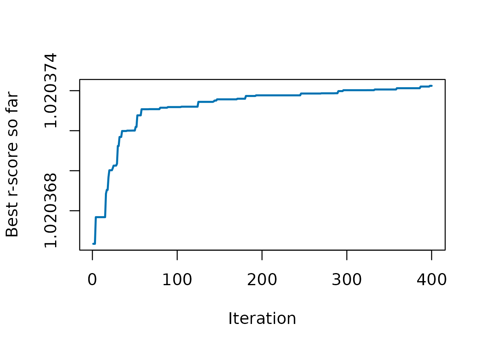

TSDFGS answers two questions before you phenotype anything:
- Which individuals of a genotyped panel should be phenotyped as the training set?
- How many are enough?
The input is a numeric matrix with one row per individual. Principal components (PCs) of the genotypes work well and keep the computation small; marker genotypes coded as -1, 0, 1 also work.
The example data
geno holds the PCs of 404 rice accessions (Zhao et al.,
2011), and subpop their sub-population. We keep the first
15 PCs of the first 150 accessions so that the examples run in
seconds.
data(geno)
data(subpop)
g <- as.matrix(geno)[1:150, 1:15]
sp <- as.character(subpop)[1:150]
table(sp)
#> sp
#> ADMIX AROMATIC AUS IND TEJ TRJ
#> 14 9 18 40 34 35Score a training set
A criterion compares a training set (X) with the test
set (X0) whose breeding values you want to predict.
Find a training set
optTrain() searches the candidates for the set with the
best criterion. With a test set the search is targeted. Without
one, the candidates that are not chosen act as the test set
(untargeted).
set.seed(1)
fit <- optTrain(g, cand = 1:100, n.train = 30, test = 101:150,
method = "rScore", min.iter = 400, console = FALSE)
fit$OPTtrain # rows of g to phenotype
#> [1] 65 10 71 67 28 51 17 60 27 47 44 86 15 2 57 99 82 31 100
#> [20] 92 5 13 94 8 89 33 62 25 46 19
fit$converged # did the search stop by the convergence rule?
#> [1] TRUEThe criterion rises during the search and flattens when it has converged. Always look at it:
plot(fit$TOPscore, type = "l", col = "#0072B2", lwd = 2,
xlab = "Iteration", ylab = "Best r-score so far")
A random set of the same size is the baseline to beat:
set.seed(2)
random_scores <- replicate(200, {
s <- sample(1:100, 30)
r_score(g[s, ], g[101:150, ])
})
c(optimized = r_score(g[fit$OPTtrain, ], g[101:150, ]),
random_mean = mean(random_scores), random_max = max(random_scores))
#> optimized random_mean random_max
#> 1.020374 1.020230 1.020370Sub-populations
If the panel has structure, pass subpop to keep every
group represented in proportion. With a test set, subpop
has one entry per row of geno.
How many individuals?
SSDFGS() simulates the r-score for several training set
sizes, fits a logistic growth curve, and returns the operating curve:
the relative efficiency of the r-score (RErs) against the size. It is
the slow step; use multi.threads = TRUE on Linux or
macOS.
res <- SSDFGS(geno)
res$OC.fig # operating curve (needs ggplot2)
res$parameter # alpha, beta, gamma of the growth curveRead the size where RErs reaches 0.95 or 0.99 from the curve; it marks the point where more phenotyping adds little.
Next
- Choosing a criterion: what other criteria exist and when each is a good choice.
- How the scores are computed: the formulas behind the speed.
- Moving from v2 to v3: what changed and what did not.
Reference
Ou, J.-H., & Liao, C.-T. (2019). Training set determination for genomic selection. Theoretical and Applied Genetics, 132, 2781-2792. https://doi.org/10.1007/s00122-019-03387-0
Zhao, K., et al. (2011). Genome-wide association mapping reveals a rich genetic architecture of complex traits in Oryza sativa. Nature Communications, 2, 467. https://doi.org/10.1038/ncomms1467